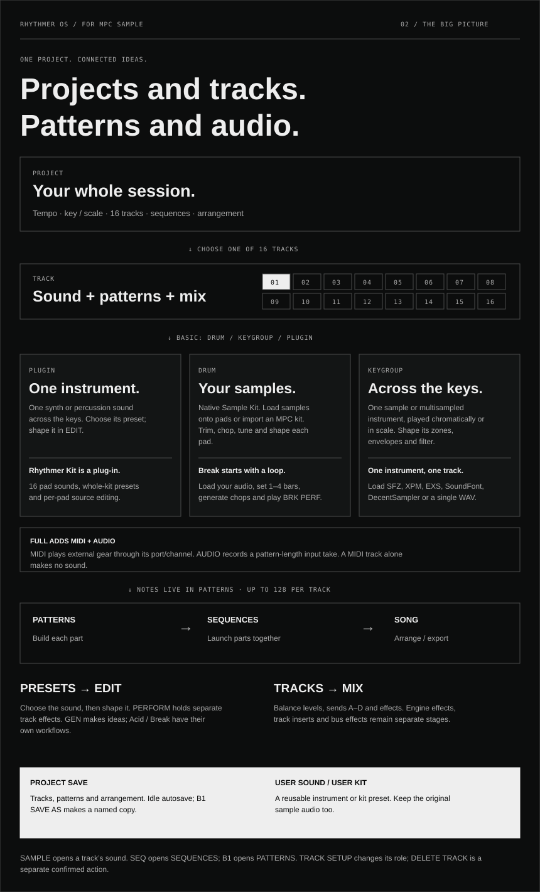

이 문서는 0.2.0 화면의 조작을 설명합니다. 먼저 헤더의 트랙 번호와 현재 버튼명을 확인하세요.
RHYTHMER OS 0.2.0 필수 조작과 화면 구분
클릭(Push)은 큰 인코더를 누르는 동작, 회전(Turn)은 돌리는 동작입니다. B1–B3는 화면 위, K1–K3는 화면 아래의 왼쪽부터 세 버튼·노브입니다.
꼭 알아야 할 버튼 조합

| 목적 | 조작 | 확인할 결과 |
|---|---|---|
| 뒤로 / 취소 | SHIFT + 인코더 클릭 | 한 단계 복귀. 확인창 취소. MENU에서도 B1 BACK과 동일 |
| 미세 조정 | 대상 K1–K3 조작 후 SHIFT + 인코더 회전 | 해당 값 미세 조절. 뒤로 가기가 아님 |
| TRACKS 열기 | PAD FX + KNOB FX 동시 | 트랙 목록·믹스, B1 TRACK SETUP |
| 트랙 선택 | PAD BANK를 누른 채 대상 패드, 이후 PAD BANK 놓기 | 헤더의 트랙 번호 변경 |
| 소리 연주 / 녹음 준비 | SAMPLE | 패드가 악기를 연주 |
| 한 트랙 패턴 선택 | SEQ → B1을 눌러 PATTERNS | 패드가 현재 트랙의 패턴 번호를 선택 |
| 여러 트랙 시퀀스 실행 | SEQ → B1을 눌러 SEQUENCES | 해당 번호의 패턴을 여러 트랙에서 실행 |
| 스텝 편집 | SHIFT + SEQ | 현재 트랙·패턴의 Step Edit |
| 녹음 | SAMPLE → SEQ RECORD → PLAY | 카운트인 후 연주, SEQ RECORD를 다시 누르면 녹음만 종료 |
| GEN | PATTERNS → SHIFT + B3 GEN | 적용 대상과 NEW SOUNDS / KEEP SOUND(S) 확인 |
| 프로젝트 사본 저장 | SHIFT + Pad 16 → B1 SAVE AS → B3 SAVE | 이름으로 저장. SAVED 확인 |
| Undo / Redo | SHIFT + − / + | 지원되는 프로젝트 편집 복구·재적용 |
| 오디오 끊기 | 400ms 이내 STOP 두 번 | 현재 음·잔향 정지. 새 노트 또는 PLAY로 재개 |
| 설정 | SHIFT + Pad 8 | 메인 Settings, K1 FEATURES로 BASIC / FULL |
PAD BANK 한 번 탭은 뱅크를 바꿉니다. 누른 채 트랙을 선택한 동작은 뱅크를 바꾸지 않습니다. NOTE REPEAT / ARP가 켜져 있으면 B1–B3에 반복 속도가 우선 표시될 수 있으므로 메뉴 조작 전에 끄세요.
무엇을 선택했는지 확인하기

| 대상 | 뜻 | 진입 |
|---|---|---|
| 프로젝트 | 트랙·패턴·믹스·편곡을 보관하는 세션 | SHIFT + Pad 16 |
| 트랙 | 악기 또는 오디오와 해당 패턴·믹스 | PAD BANK + 패드 또는 TRACKS |
| 패턴 | 한 트랙의 노트·지원 모션. 트랙당 최대 128개 | PATTERNS |
| 시퀀스 | 같은 패턴 번호를 여러 트랙에서 함께 실행 | SEQUENCES |
트랙 선택 후 소리를 연주하려면 SAMPLE을 누르세요. PATTERNS에 있으면 패드는 여전히 패턴을 고릅니다.
Basic의 빈 트랙은 Drum / Keygroup / Plugin을 선택합니다. FULL에서는 MIDI / Audio도 표시됩니다. Rhythmer Kit은 Plugin에 있는 16패드 악기이고 Drum은 샘플을 넣는 네이티브 킷입니다. 개별 신스는 한 소리를 여러 음높이로 연주합니다.
가장 자주 필요한 두 경로
- 악기·타입 교체: 대상 트랙 → PAD FX + KNOB FX → B1 TRACK SETUP. TRACK TYPE은 패턴을 유지하고, DELETE TRACK은 소리·패턴을 별도로 확인 후 삭제합니다.
- Break 설정 재진입: Break 트랙 → SEQ → B1 PATTERNS → SHIFT + B3 GEN → BREAK GEN. 하위 Back은 GEN 메인으로 돌아갑니다.
프로젝트는 재생·녹음·프린트가 멈춘 상태에서 마지막 조작 약 3초 뒤 자동 저장됩니다. SAVE AS는 이름을 지정한 사본입니다. User Sound/Kit은 악기·킷 설정이며 프로젝트 노트와 원본 샘플 백업을 대신하지 않습니다.